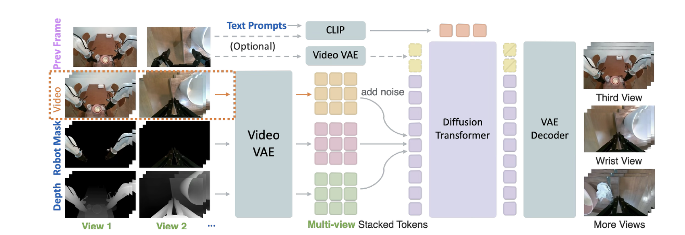
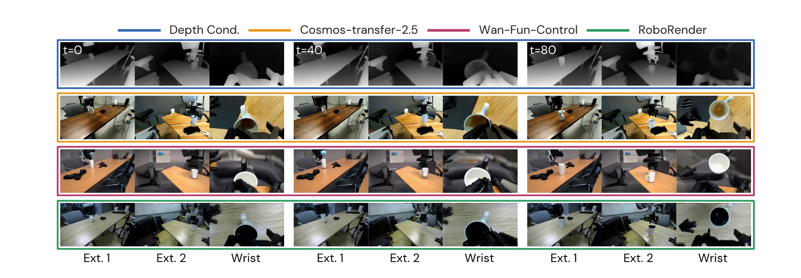
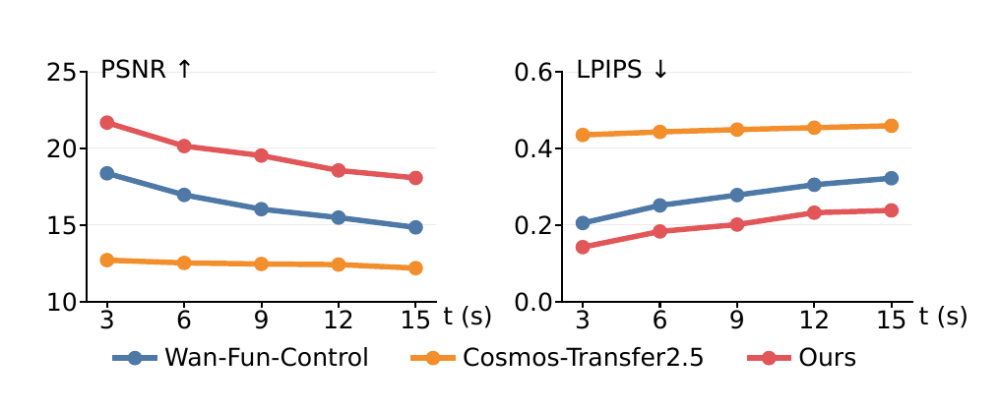
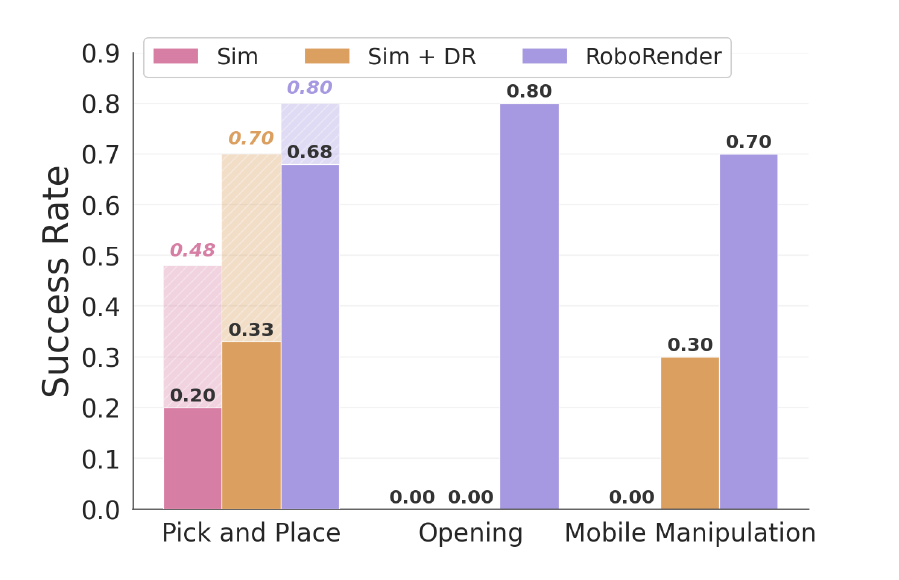
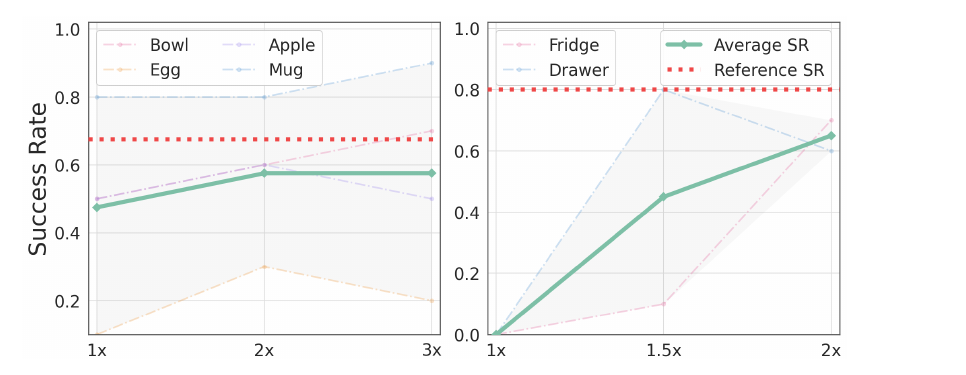

Simulation enables large-scale, low-cost robot data generation, but policies trained in simulation often fail to transfer to the real world due to the sim-to-real visual discrepancies. Existing approaches often rely on intermediate representations, which can discard rich semantic information or require additional perception modules at deployment. We address this visual sim-to-real gap with RoboRender, a framework that converts simulated trajectories into photorealistic RGB videos for policy learning. RoboRender trains a robot-oriented video generation model conditioned on simulated depth videos, language instructions, and robot RGB mask videos, preserving simulator geometry, robot motion, and action labels while synthesizing realistic textures, backgrounds, and distractors. The generated RGB videos are paired with simulator-provided states and actions to train policies for zero-shot real-world deployment. On robot video test sets, our video generation model outperforms depth-conditioned video generation baselines in video generation quality. In real-world experiments across pick-and-place, articulated-object manipulation, and mobile manipulation tasks, policies trained on RoboRender-generated data achieve a 71% average success rate, outperforming raw simulation renderings and conventional visual domain randomization by approximately 6.5× and 3×, respectively. We further show that policy performance improves with more generated videos per simulation trajectory, increasing opening-task success by 65 percentage points. These results demonstrate that generative video rendering mitigates the visual sim-to-real gap for zero-shot policy transfer.
RoboRender adapts Wan2.1-T2V-1.3B into a robot-oriented renderer, fine-tuned on ~130k real-world robot manipulation samples (~70k from AgiBot-World-Alpha, ~60k from DROID) at 416×240. Simulated depth fixes scene geometry and object motion, a robot RGB mask fixes embodiment and arm motion, and a language prompt controls appearance — textures, materials, lighting and background semantics. Because geometry and actions come from the simulator, every generated video inherits exact action labels for policy learning.

During training, raw RGB videos are VAE-encoded and noised to form the diffusion input. Per-view depth and robot-arm RGB mask videos are encoded as spatial conditions, while CLIP-encoded language prompts and previous-frame inputs provide semantic and temporal conditioning. Per-view condition latents are concatenated with the noised latents and stacked into a unified multi-view latent, which is denoised and decoded into RGB videos.
Conditioning signals (RGB, simulated depth, robot mask) and the resulting photorealistic generation, with the language prompt used for each sample.
We evaluate the video model on 500 held-out clips from DROID and AgiBot under two inference-matched settings: first-chunk generation, which synthesizes the initial chunk without previous-frame conditioning, and autoregressive continuation, which generates a chunk conditioned on a ground-truth previous frame.

Given the same depth conditions, RoboRender produces realistic video while preserving object consistency across views. The baselines lack multi-view consistency, so shared objects such as the table vary between views.
| First-chunk | AR continuation | ||||
|---|---|---|---|---|---|
| Model | FID ↓ | FVD ↓ | PSNR ↑ | SSIM ↑ | LPIPS ↓ |
| Wan-Fun-Control | 62.5 | 267.8 | 20.30 | 0.738 | 0.175 |
| Cosmos-Transfer2.5 | 42.8 | 164.5 | 13.26 | 0.481 | 0.423 |
| RoboTransfer | 52.8 | 275.4 | 13.75 | 0.509 | 0.418 |
| RoboRender | 25.7 | 93.9 | 22.28 | 0.784 | 0.142 |

Per-frame PSNR and LPIPS along 15-second autoregressive rollouts, sampled every 3 seconds. RoboRender leads at every step, so quality holds up across the repeated autoregressive steps needed to render a full simulation trajectory.
A two-alternative forced-choice (2AFC) study run on Prolific. Numbers are the rate at which raters favour RoboRender over each baseline.
| Multi-view consistency | Generation quality | |
|---|---|---|
| over Wan-Fun-Control | 76.9% | 90.6% |
| over Cosmos-Transfer2.5 | 74.9% | 68.9% |
| over RoboTransfer | 85.7% | 94.6% |
Every clip below is produced by RoboRender from a simulated trajectory plus a scene description. Depth and robot-mask conditioning hold the geometry and the arm motion to the simulator, so the action labels stay valid, while the language prompt determines the room, materials and lighting. Pick a task to see nine generated episodes, chosen to be as visually distinct from each other as possible. Each tile stacks the camera views for that episode — external and wrist for the Franka tasks, head and both wrists for the R1Pro, ego and wrist for the Yam — so multi-view consistency is visible directly.
Policies are trained purely on RoboRender-generated video and deployed zero-shot. Evaluations run in a natural office environment, with object size, geometry, camera viewpoint and background all differing from simulation. One successful rollout is shown per task, across all three embodiments. All clips play at 2× speed.
Mug
Droid
Bowl
Droid
Apple
Droid
Egg
Droid
Open the fridge
Droid
Open the drawer
Droid
Pick up the radio
R1Pro
Place the marker
Yam · side and wrist views
| Droid | R1Pro | Yam | |||||||
|---|---|---|---|---|---|---|---|---|---|
| Data | Mug | Bowl | Apple | Egg | Open Fridge | Open Drawer | Pick up Radio | Place Blue Marker | Avg. |
| Sim | 40% | 30% | 10% | 0% | 0% | 0% | 0% | 0% | 10% |
| Sim + DR | 60% | 20% | 20% | 30% | 0% | 0% | 30% | 5% | 21% |
| RoboRender | 80% | 80% | 60% | 50% | 70% | 90% | 70% | 70% | 71% |
Each task is evaluated over 10 rollouts with varied robot starts and object locations. Pick-and-place tasks additionally include random table distractors.

For the pick-and-place category, the lighter hatched extension on each bar shows the same method evaluated without distractor objects. The largest gains are on the opening tasks, where RoboRender is the only method with non-zero success — these require recognizing fine visual details such as drawer and fridge handles whose textures resemble the object body.

Policy success rate against the number of videos generated per unique simulation trajectory, for pick-and-place (left) and opening (right). Solid green is the per-category average, dash-dot lines the individual tasks, and dotted red the reference policy trained with 2× more simulation trajectories. Performance improves with more generated videos even though the underlying set of unique simulation trajectories is unchanged.
@inproceedings{anonymous2026roborender,
author = {Anonymous Authors},
title = {RoboRender: Robot-Oriented Video Generation for Visual Sim-to-Real Transfer},
booktitle = {Under review at the Conference on Robot Learning (CoRL)},
year = {2026},
}